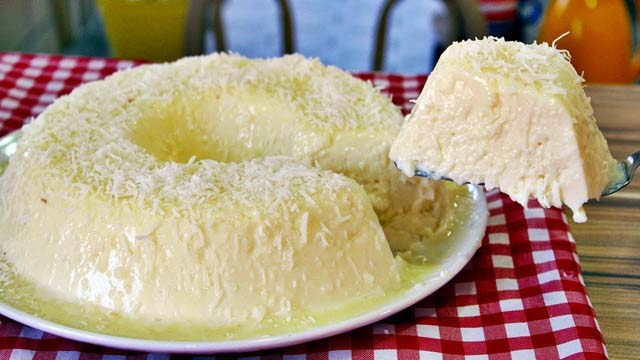

Receita: Manjar de coco da Ingrid

Veja o vídeo da receita:
Ingredientes
- 1 litro de leite
- 1 vidro pequeno de leite de coco
- 200g de coco ralado sem açucar
- 5 colheres de amido de milho
- 1 leite condensado
Modo de preparo
- Unte a forma molhando uniformemente com água e leve o recipiente ao freezer.
- Coloque o leite, o leite condensado, o leite de coco e 100g coco ralado em uma panela, misture bem
- Leve ao fogo e junte o amido de milho dissolvido em um copo de leite.
- Mexa sempre até engrossar, aguarde mais um minuto.
- Retire a forma do congelador retire o excesso de gelo e despeje o líquido
- Deixe esfriar
- Adicione 100g de coco ralado como decoração e sirva.